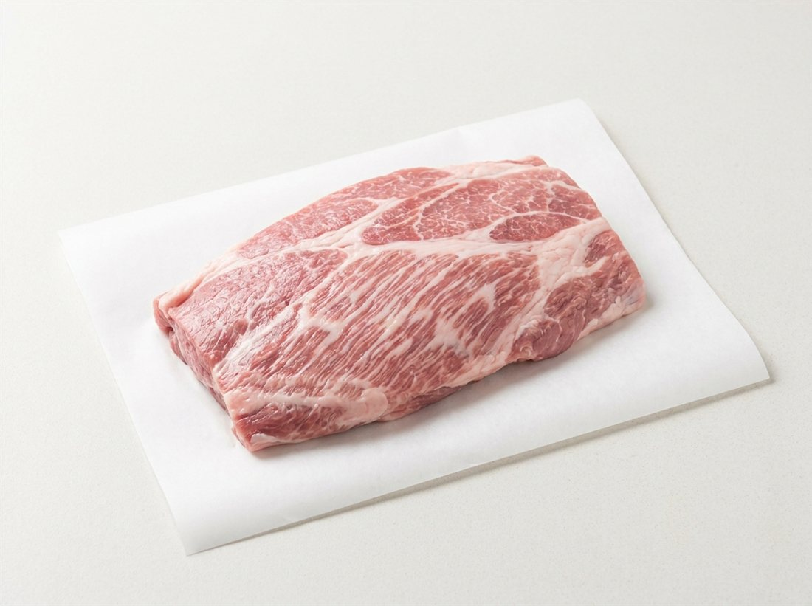
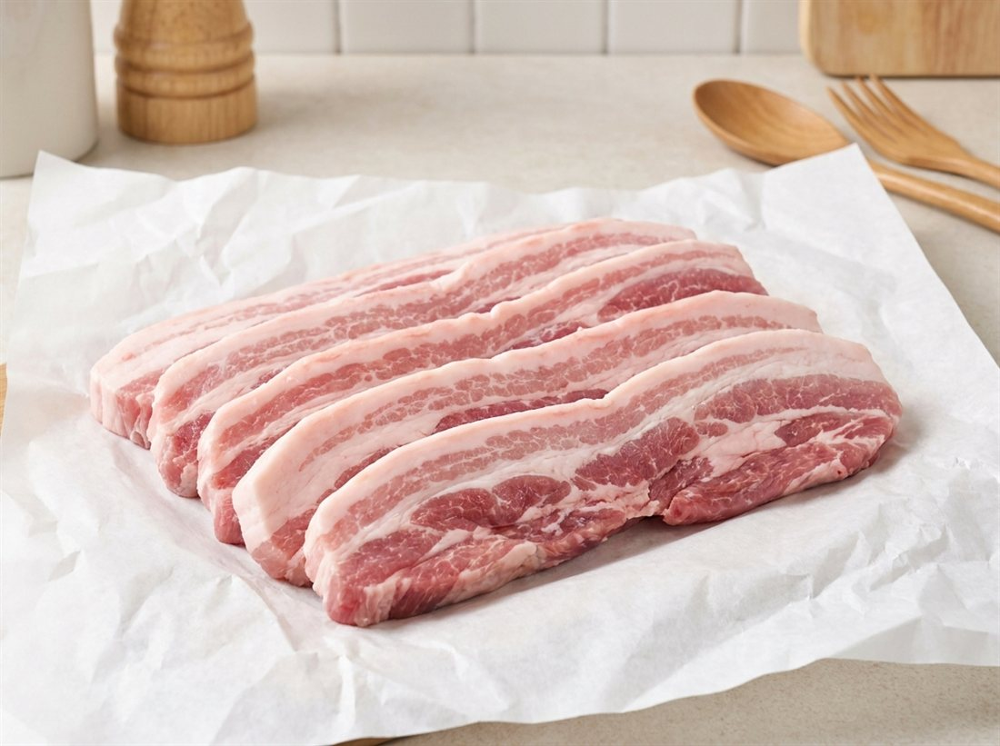
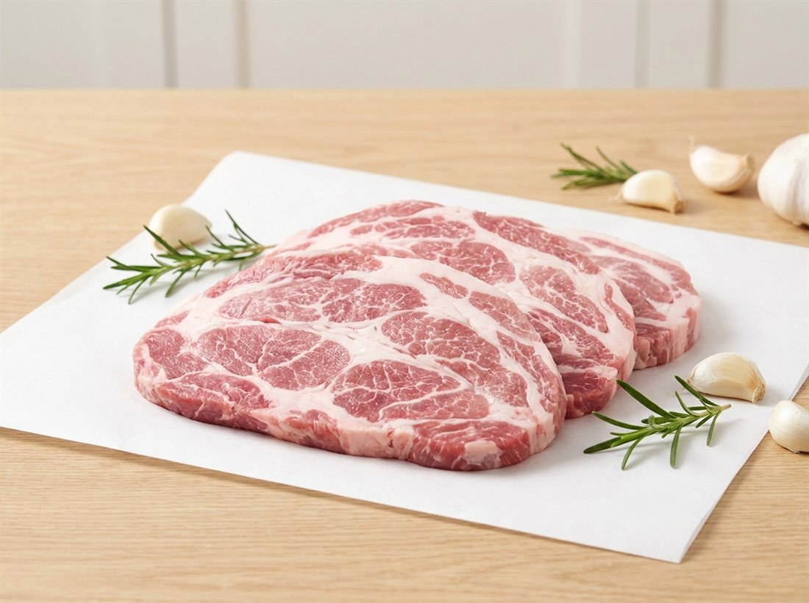
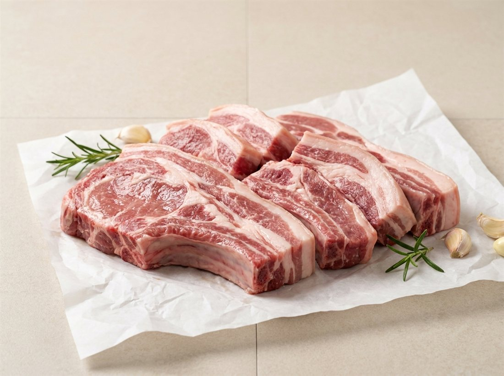
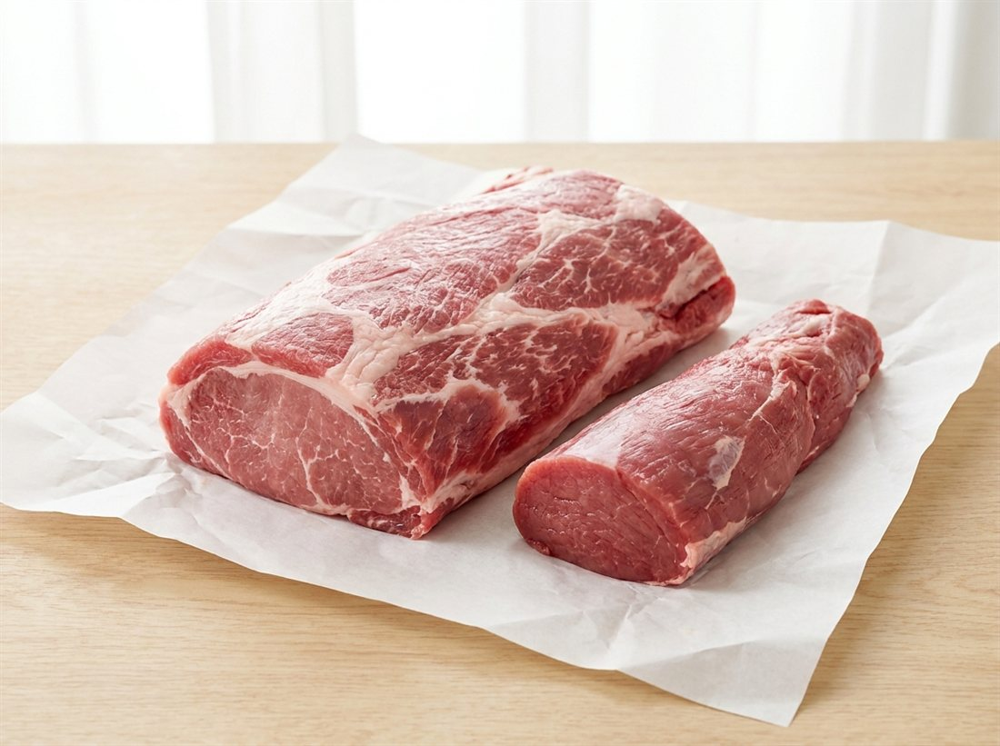
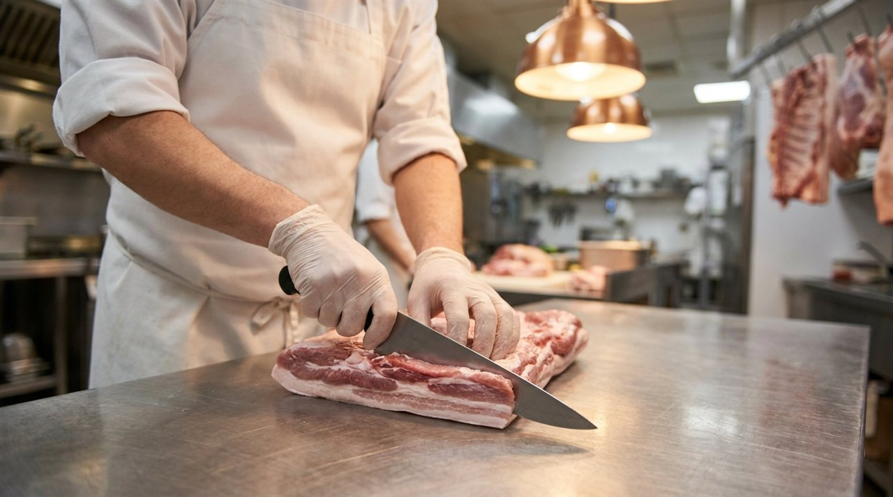

products
부위별로,
매장 스펙 그대로
아래 모든 부위는 암퇘지 1등급 이상 원육입니다. 두께 · 용량 · 포장은 물론 손질 상태까지 지정한 대로 맞춰 전국 어디든 신선한 상태로 보내드립니다.
아래 모든 부위 암퇘지 1등급 이상 · 매장 맞춤 손질 · 전국 보냉 포장 배송
배송 가능 여부 문의
삼겹살
고깃집의 얼굴이 되는 부위입니다. 살코기와 지방 비율이 좋은 원육을 엄선해, 매장 불판과 메뉴에 맞는 두께로 슬라이스합니다.
- 원육 기준
- 암퇘지 1등급 이상 · 100% 국내산 한돈
- 추천 용도
- 구이용, 오겹 구이, 수육 · 보쌈
- 가공 옵션
- 두께 지정 슬라이스 (3mm ~ 24mm), 통삼겹, 껍질 유무 선택
- 손질 상태
- 겉지방 다듬기
- 포장 방식
- 벌크 · 진공 · 소분 (용량 지정 가능)

목살
마블링이 고르게 퍼진 목살은 구이부터 보쌈, 주물럭까지 활용도가 높습니다. 메뉴 특성에 맞춘 두께와 정형 상태로 공급합니다.
- 원육 기준
- 암퇘지 1등급 이상 · 100% 국내산 한돈
- 추천 용도
- 구이용, 보쌈 · 수육, 주물럭, 스테이크
- 가공 옵션
- 두께 지정 슬라이스, 통목살, 깍둑 · 채썰기 가공
- 손질 상태
- 겉지방 다듬기
- 포장 방식
- 벌크 · 진공 · 소분 (용량 지정 가능)

갈비
찜 · 구이 전문점을 위한 부위입니다. 절단 규격과 정형 방식을 지정하시면 그 기준에 맞춰 손질해 납품합니다.
- 원육 기준
- 암퇘지 1등급 이상 · 100% 국내산 한돈
- 추천 용도
- 돼지갈비 구이, 갈비찜, 바비큐 (등갈비)
- 가공 옵션
- 절단 규격 지정, 칼집 가공, 등갈비 · 쪽갈비 정형
- 손질 상태
- 겉지방 다듬기
- 포장 방식
- 벌크 · 진공 (용량 지정 가능)

등심 · 안심
돈까스, 탕수육 등 대량 조리 메뉴의 핵심 부위입니다. 요청하신 규격에 맞춰 가공해, 대량 조리 시 편차를 줄이는 데 도움이 됩니다.
- 원육 기준
- 암퇘지 1등급 이상 · 100% 국내산 한돈
- 추천 용도
- 돈까스, 탕수육, 잡채 · 볶음용, 급식 식자재
- 가공 옵션
- 정육 슬라이스, 돈까스용 두께 지정, 채썰기 · 깍둑 가공
- 손질 상태
- 겉지방 깔끔하게 제거
- 포장 방식
- 벌크 · 진공 · 소분 (규격 납품 가능)
특수부위
항정살, 가브리살, 갈매기살 등 매장의 단가와 마진을 높여주는 부위입니다. 물량이 한정적인 만큼 정기 거래처에 우선 공급합니다.
- 원육 기준
- 암퇘지 1등급 이상 · 100% 국내산 한돈
- 취급 부위
- 항정살, 가브리살, 갈매기살 등
- 가공 옵션
- 부위별 정형, 두께 지정 슬라이스
- 손질 상태
- 겉지방 깔끔하게 제거
- 포장 방식
- 진공 · 소분
잡육 · 기타 부위
찌개용, 분쇄육(민찌), 가공식품 원료육, 앞다리 · 뒷다리 등 실속 부위도 안정적으로 공급합니다. 용도를 알려주시면 가장 경제적인 부위와 스펙을 제안해 드립니다.
앞다리 (전지)
불고기, 제육볶음, 찌개용
뒷다리 (후지)
장조림, 분쇄육, 가공 원료
분쇄육 (민찌)
만두, 동그랑땡, 소스용
기타 부위
사골, 잡뼈, 껍데기 등 문의

custom processing
매장마다 다른 스펙,
부영미트는 다 맞춰 드립니다
- 손질
- 겉지방 정리 수준을 거래처 기준에 맞춰 고정. 한 번 정하면 이후 주문도 같은 상태로 나갑니다
- 두께
- 얇은 구이용부터 두툼한 스테이크 컷까지 mm 단위로 지정
- 용량
- 1인분 소분부터 벌크 박스 단위까지 원하는 용량으로
- 포장
- 진공 · 트레이 · 벌크 등 매장 보관 환경에 맞는 포장
- 배송
- 냉장 차량 또는 보냉 포장으로 전국 어디든 발송